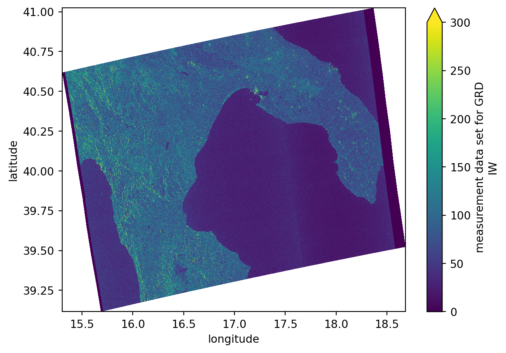
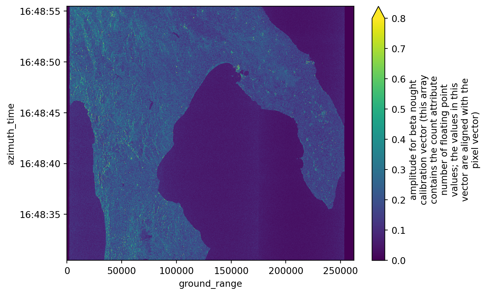
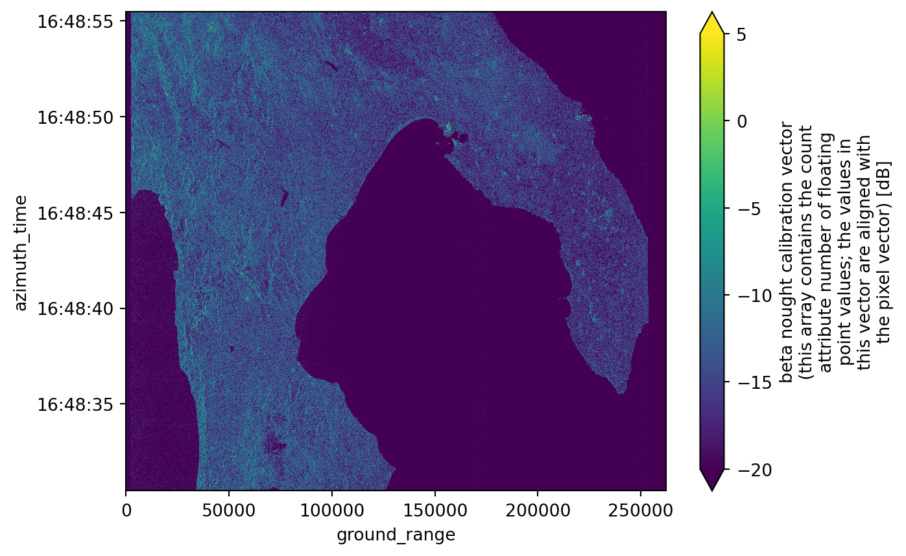
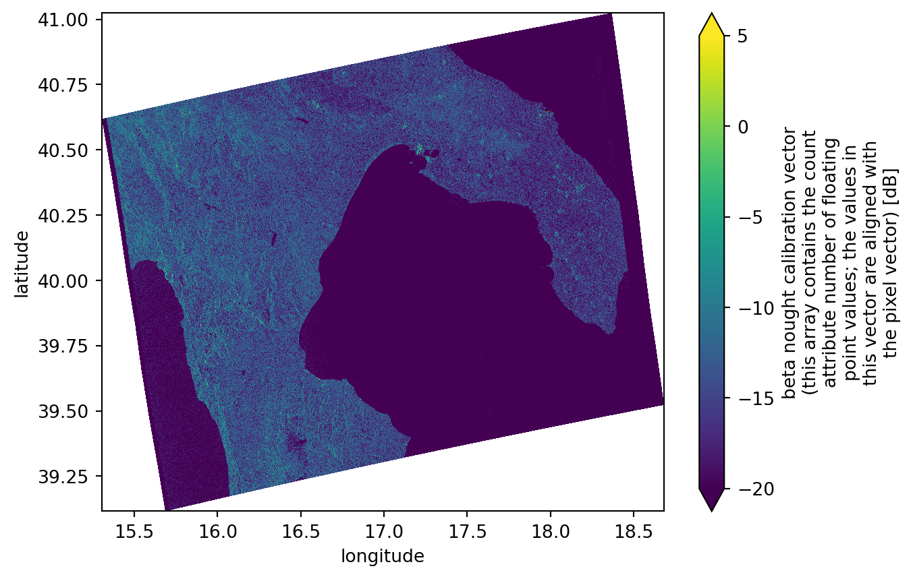

import xarray as xr # Basic package to deal with data arrays
import xarray_sentinel # Handles most basic SAR operations
import matplotlib
import matplotlib.pyplot as plt
import numpy as npOperations with EOPF Zarr - Sentinel-1 GRD
Introduction
In this notebook, we will explore additional functionalities that can be applied to Sentinel-1 GRD data. Continuing to access the data through the EOPF Zarr sample services, we will learn how to visualize and carry out basic SAR operations, such as georeferencing and backscatter calibration, using the .zarr format.
What we will learn
- üó∫Ô∏è How to georeference a Sentinel-1 GRD image using the correct latitude and longitude coordinates?
- ✳ How to calibrate the amplitude over a Sentinel-1 GRD product?
- ✨ How to calibrate the intensity with dB over a Sentinel-1 GRD product?
Prerequisites
This tutorial uses a re-processed sample dataset from the EOPF Sentinel Zarr Samples Service STAC API: - S1A_IW_GRDH_1SDV_20170508T164830_20170508T164855_016493_01B54C_8604
Additionally, it is uselful to install the extra dependencies from this environment. To do it we just need to run the following command:
uv sync --all-extrasImport libraries
Georeferencing GRD product
As seen in the previous chapter, plotting a Sentinel-1 GRD item displays an image with azimuth_time and ground_rangecoordinates. While these are indeed valid coordinates for Sentinel-1 products, they are only meaningful within the context of image acquisition.
To compare them with other geospatial datasets or to examine their actual location on Earth, the data needs to be georeferenced using geographic coordinates, such as latitude and longitude.
Opening the product
As usual, the first step is to open the Sentinel-1 GRD product we are going to work with. Using the well know functions open_datatree() and open_dataset(), we open the .zarrproduct.
url = "https://objectstore.eodc.eu:2222/e05ab01a9d56408d82ac32d69a5aae2a:sample-data/tutorial_data/cpm_b716/S1A_IW_GRDH_1SDV_20170508T164830_20170508T164855_016493_01B54C_8604.zarr"
dt = xr.open_datatree(url, engine='zarr', chunks={})We can access .groups and explore what is inside the polarisation group, as it corresponds to the information we will be working with.
This is going to help us later opening specific subgroups, such as measurementssubgroup.
dt.S01SIWGRD_20170508T164830_0025_A094_8604_01B54C_VH.groups('/S01SIWGRD_20170508T164830_0025_A094_8604_01B54C_VH',
'/S01SIWGRD_20170508T164830_0025_A094_8604_01B54C_VH/conditions',
'/S01SIWGRD_20170508T164830_0025_A094_8604_01B54C_VH/measurements',
'/S01SIWGRD_20170508T164830_0025_A094_8604_01B54C_VH/quality',
'/S01SIWGRD_20170508T164830_0025_A094_8604_01B54C_VH/conditions/antenna_pattern',
'/S01SIWGRD_20170508T164830_0025_A094_8604_01B54C_VH/conditions/attitude',
'/S01SIWGRD_20170508T164830_0025_A094_8604_01B54C_VH/conditions/azimuth_fm_rate',
'/S01SIWGRD_20170508T164830_0025_A094_8604_01B54C_VH/conditions/coordinate_conversion',
'/S01SIWGRD_20170508T164830_0025_A094_8604_01B54C_VH/conditions/doppler_centroid',
'/S01SIWGRD_20170508T164830_0025_A094_8604_01B54C_VH/conditions/gcp',
'/S01SIWGRD_20170508T164830_0025_A094_8604_01B54C_VH/conditions/orbit',
'/S01SIWGRD_20170508T164830_0025_A094_8604_01B54C_VH/conditions/reference_replica',
'/S01SIWGRD_20170508T164830_0025_A094_8604_01B54C_VH/conditions/replica',
'/S01SIWGRD_20170508T164830_0025_A094_8604_01B54C_VH/conditions/terrain_height',
'/S01SIWGRD_20170508T164830_0025_A094_8604_01B54C_VH/quality/calibration',
'/S01SIWGRD_20170508T164830_0025_A094_8604_01B54C_VH/quality/noise',
'/S01SIWGRD_20170508T164830_0025_A094_8604_01B54C_VH/quality/noise_range')measurements = dt["S01SIWGRD_20170508T164830_0025_A094_8604_01B54C_VH/measurements"].to_dataset()As the measurements.grdarray is large to be directly plotted, we need to slice it. Applying the .isel()method is useful in this case.
We observe that the grd product coordinates azimuth_time and ground_range and not stored in geographical coordinates.
grd = measurements.grd.isel(
azimuth_time=slice(None, None, 10), ground_range=slice(None, None, 10)
)
grd.plot(vmax=300)
plt.show()
Setting the GCP
In order to georeference the image with the correspondent latitude and longitude coordinates, we need to access and use the ground control points stored into the .zarr structure.
These are well known points that contain both the latitude and longitude coordinates but also the azimuth time and ground range coordinates, making it possible to georeference the grd image.
ground_control_point = dt["S01SIWGRD_20170508T164830_0025_A094_8604_01B54C_VH/conditions/gcp"].to_dataset()
ground_control_point<xarray.Dataset> Size: 12kB
Dimensions: (azimuth_time: 10, ground_range: 21)
Coordinates:
* azimuth_time (azimuth_time) datetime64[ns] 80B 2017-05-08T16:48:...
* ground_range (ground_range) float64 168B 0.0 ... 2.624e+05
line (azimuth_time) uint32 40B dask.array<chunksize=(10,), meta=np.ndarray>
pixel (ground_range) uint32 84B dask.array<chunksize=(21,), meta=np.ndarray>
Data variables:
azimuth_time_gcp (azimuth_time, ground_range) datetime64[ns] 2kB dask.array<chunksize=(10, 21), meta=np.ndarray>
elevation_angle (azimuth_time, ground_range) float64 2kB dask.array<chunksize=(10, 21), meta=np.ndarray>
height (azimuth_time, ground_range) float64 2kB dask.array<chunksize=(10, 21), meta=np.ndarray>
incidence_angle (azimuth_time, ground_range) float64 2kB dask.array<chunksize=(10, 21), meta=np.ndarray>
latitude (azimuth_time, ground_range) float64 2kB dask.array<chunksize=(10, 21), meta=np.ndarray>
longitude (azimuth_time, ground_range) float64 2kB dask.array<chunksize=(10, 21), meta=np.ndarray>
slant_range_time_gcp (azimuth_time, ground_range) float64 2kB dask.array<chunksize=(10, 21), meta=np.ndarray>Since we previously downsampled the grd product, the coordinate grid (azimuth time and ground range) was processed accordingly. To ensure that the ground control points (latitude and longitude arrays) align properly with this modified grid, we need to apply the same downsample interpolation to them.
We can achieve this using the .interp_like() method from xarray. This function interpolates the ground control point data to match the dimensions and coordinates of the grd product, specifically over the current azimuth_time and ground_range.
gcp = ground_control_point.interp_like(grd)Georeferencing the product
The final step is to assign the corresponding decimated latitude and longitude values (interpolated from the ground control points) to the grd product. This can be done using the .assign_coords() method.
After assigning the coordinates, the grd dataset will include latitude and longitude as new entries in its coordinate system. When plotting the grd image, you can then specify longitude as the x axis and latitude as the y axis. This will display a properly georeferenced image, allowing it to be compared directly with other spatial datasets.
grd = grd.assign_coords({"latitude": gcp.latitude, "longitude": gcp.longitude})
grd<xarray.DataArray 'grd' (azimuth_time: 1670, ground_range: 2624)> Size: 9MB
dask.array<getitem, shape=(1670, 2624), dtype=uint16, chunksize=(256, 2624), chunktype=numpy.ndarray>
Coordinates:
* azimuth_time (azimuth_time) datetime64[ns] 13kB 2017-05-08T16:48:30.4679...
* ground_range (ground_range) float64 21kB 0.0 100.0 ... 2.622e+05 2.623e+05
line (azimuth_time) float64 13kB dask.array<chunksize=(1670,), meta=np.ndarray>
pixel (ground_range) float64 21kB dask.array<chunksize=(2624,), meta=np.ndarray>
latitude (azimuth_time, ground_range) float64 35MB dask.array<chunksize=(1670, 2624), meta=np.ndarray>
longitude (azimuth_time, ground_range) float64 35MB dask.array<chunksize=(1670, 2624), meta=np.ndarray>
Attributes:
_eopf_attrs: {'coordinates': ['azimuth_time', 'line', 'pixel', 'ground_r...
dtype: <u2
long_name: measurement data set for GRD IWgrd.plot(x="longitude", y="latitude", vmax=300)
plt.show()
Calibrating amplitude and intensity
In Sentinel-1 GRD products, only the amplitude of the signal is stored, while the phase information is discarded, unlike Single Look Complex (SLC) products, which preserve both. Therefore, it is essential to calibrate the amplitude using the raw Digital Number (DN) values and the additional metadata provided in the calibration subgroup.
The relationship between intensity and amplitude is given by: \[ \text{Intensity} = |\text{Amplitude}|^2 \]
calibration = dt["/S01SIWGRD_20170508T164830_0025_A094_8604_01B54C_VH/quality/calibration"].to_dataset()Amplitude
Since amplitude represents the strength of the radar signal that is backscattered and received by the sensor, amplitude calibration is essential to convert raw digital numbers (DN) into physically meaningful amplitude values. This calibration involves applying the beta_nought coefficient, which represents the normalized radar backscatter without accounting for the incidence angle.
The result is a calibrated amplitude image, where pixel values approximate the physical radar backscatter amplitude. To perform this calibration, we use the .calibrate_amplitude() method from the xarray_sentinel library.
calibrate_amplitude = xarray_sentinel.calibrate_amplitude(
grd, calibration.beta_nought
)
calibrate_amplitude.plot(vmax=0.8)
plt.show()
Intensity
Similar to the amplitude calibration process, intensity calibration can be performed using the .calibrate_intensity() method from the xarray_sentinel library. This method converts the raw Digital Number (DN) values into radar backscatter intensity. The output is a physically meaningful radar brightness image, usually represented in decibels (dB).
calibrate_intensity = xarray_sentinel.calibrate_intensity(
grd, calibration.beta_nought, as_db=True
)
calibrate_intensity.plot(vmin=-20, vmax=5)
plt.show()
Georeferenced intensity
Because we georeferenced the grd image in the measurements.grd dataset before performing the calibrations, both calibrated_amplitude and calibrated_intensity now include not only azimuth_time and ground_range as coordinates but also latitude and longitude.
This allows us to create the same calibrated intensity plot as before, but now georeferenced using geographic coordinates (longitude on the x axis and latitude on the y axis).
calibrate_intensity<xarray.DataArray (azimuth_time: 1670, ground_range: 2624)> Size: 18MB
dask.array<maximum, shape=(1670, 2624), dtype=float32, chunksize=(256, 2624), chunktype=numpy.ndarray>
Coordinates:
* azimuth_time (azimuth_time) datetime64[ns] 13kB 2017-05-08T16:48:30.4679...
* ground_range (ground_range) float64 21kB 0.0 100.0 ... 2.622e+05 2.623e+05
line (azimuth_time) float64 13kB dask.array<chunksize=(1670,), meta=np.ndarray>
pixel (ground_range) float64 21kB dask.array<chunksize=(2624,), meta=np.ndarray>
latitude (azimuth_time, ground_range) float64 35MB dask.array<chunksize=(1670, 2624), meta=np.ndarray>
longitude (azimuth_time, ground_range) float64 35MB dask.array<chunksize=(1670, 2624), meta=np.ndarray>
Attributes:
_eopf_attrs: {'coordinates': ['azimuth_time', 'line', 'pixel', 'ground_r...
dtype: <u2
long_name: beta nought calibration vector (this array contains the cou...
units: dBcalibrate_intensity.plot(x="longitude", y="latitude", vmin=-20, vmax=5)
plt.show()
üí™ Now it is your turn
The following exercises will help you to better understand the calibration processes studied before.
Task 1: Reproduce this workflow on a different area
Using what you’ve already learned about the STAC catalog and Sentinel-1 GRD products, repeat this workflow with a different Sentinel-1 GRD scene. Try to use a scene from the area where you live, just like you did on the previous chapter. Then, observe how the geographical coordinates of the georeferenced image differ between products.
Task 2: Explore intensity and amplitude values
Discover what happens when the maximum and minimum value on x and y axis change. These will create new results, especially when considering the plots on amplitude and intensity calibration.
Task 3: Compare the intensity values with other datsets
Try to calibrate and plot some grd products from other datasets and see how the intensity values change over different areas, textures and surfaces.
Conclusion
During this tutorial we’ve learnt how to compute amplitude and intensity calibration on Sentinel-1 GRD data and how to georeference measurements.grd variable into geographical coordinates. For most of the operations we used xarray_sentinel methods.
What’s next?
Now that you have been introduced to the .zarr encoding format, learned its core concepts, and understood the basics of how to explore it, you are prepared for the next step. In the following chapter we will introduce you to the Sentinel-2 L-2A .zarr structure. As we go along, we are more and more transition from theory to practice, providing you with hands-on tutorials working with EOPF .zarr products.